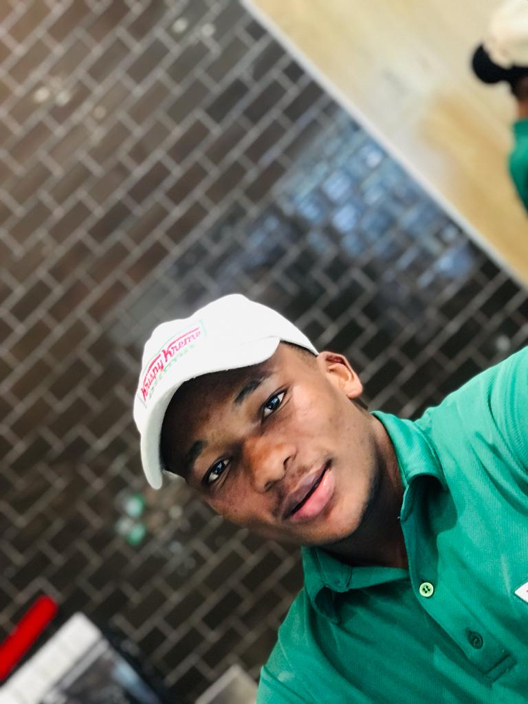

Afolabi Ericson

Summary
To contribute to the growth of any organisation or business b y ensuring accomplishment of assigned task through honesty,edication to duty and by bring transparent
Education
-
Senior Secondary Certificate Examination (SSCE)-Augusta College(2019)
Work Experience
- Barista - Krispy Kreme
October 2022 - present
- Make tasty coffee
- Good customer services
Skills
- Customer Service:⭐️⭐️⭐️⭐️⭐️
- Organizational skills:⭐️⭐️⭐️⭐️⭐️
- Work under pressure:⭐️⭐️⭐️⭐️
Awards
- Employee of the Month - Ojoye Feed Farm.(July-november 2019)
Other